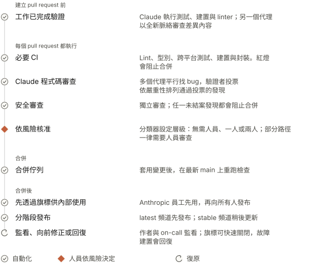
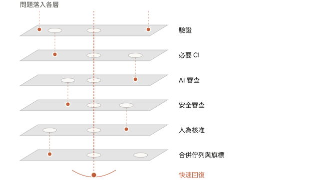
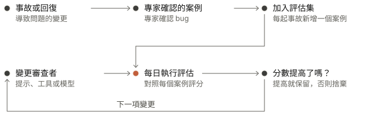
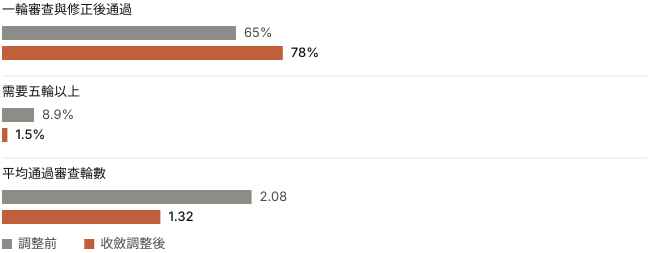
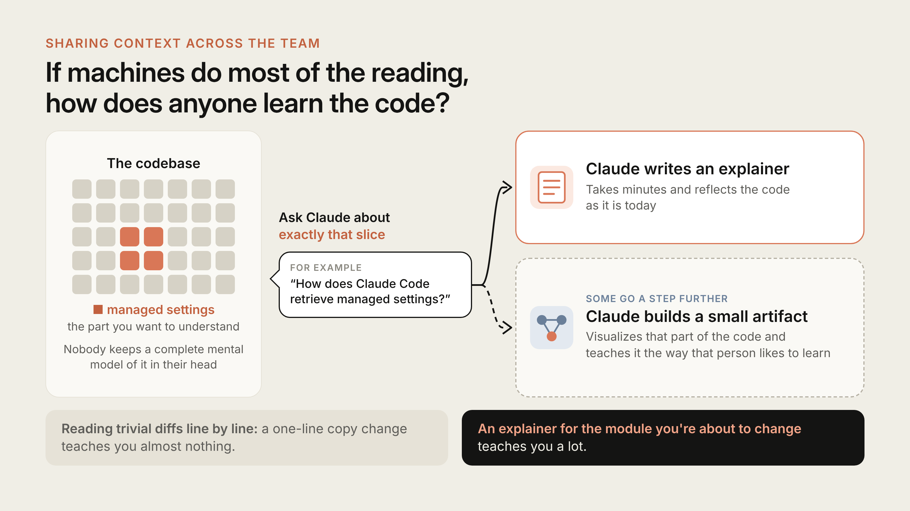

代理（agents）產出的程式碼量如此龐大，該如何審查？Claude Code 團隊在廣泛涵蓋並深入審查後，開始設法縮短人為審查時間，同時不增加回復提交或事故。
我們曾提過，Claude 撰寫 Claude Code 約 90% 的程式碼。產量如此之高，要如何審查？現在還有人讀程式碼嗎？如果出了問題，又由誰發現？
本文介紹 Claude Code 團隊的程式碼審查流程，以及這套流程如何演進。從 6 月到 9 月，合併至 Claude Code 程式碼庫的 pull request 數量增加一倍以上，而需要回復的比例下降超過 40%。
我們沒有取消審查，而是把大部分閱讀工作交給機器，將流程調整為善用人的時間與注意力，並投入大量心力，讓錯誤能快速、輕易地撤回。
重新思考程式碼審查的目的（Rethinking the purpose of code review）
代理撰寫程式碼後，變更數量會迅速增加。在 Anthropic 的單一儲存庫（monorepo）中，每日合併的變更從今年 5 月約 2,500 件增至 9 月超過 30,000 件。
Claude Code 使用自己的儲存庫，與 monorepo 分開，但同樣面臨大量變更的壓力。發布速度如此之快，逐行人工審查極為困難，甚至幾乎不可能。
程式碼審查有兩項任務：
- 在程式碼發布前找出並修正問題。
- 在團隊中建立共同脈絡，增進對程式碼庫的理解。
本文主要談找出並修正問題；接近結尾時，我們會再談第二項任務。
我們認為，「是否有真人讀過程式碼？」並不是精確的衡量方式。更適切的問題是：「這項變更可能出什麼問題？該由哪種檢查（自動化或人工）來發現？」
提出這個問題，也改變了審查的時機。過去，審查是流程末端的關卡：寫好程式碼、開啟 PR，然後等待同事。
現在，審查會持續進行，更像寫作時的拼字檢查。大多數變更在交由人查看前，至少已由 Claude 審查並修正過一次。這能找出多數例行錯誤，也讓團隊保留注意力，處理更高層次的問題並仔細檢視。
稀缺資源：人的時間與注意力（The scarce resource: human time and attention）
我們希望把人的時間與注意力留給只有人能解決的問題，其他問題則由自動化檢查發現。以目前的變更速度，仍有大量工作需要人處理，團隊幾乎每天都會遇到新而少見的挑戰。
人工審查的成本包含兩部分：審查所花的時間，以及修復不良程式碼造成問題所花的時間。如果只是把第一部分的時間轉移到第二部分，就沒有省下時間。
因此，我們的目標是讓 Claude Code 各個儲存庫（CLI、桌面與網頁應用程式，以及行動應用程式）中的大多數 pull request，在最多一名人員參與下合併；這名人員可以是作者本人，而且回復或事故不得增加。我們追蹤每個 PR 的人為核准數（中位數與第 95 百分位數）、人為留言數，以及 PR 等待人員處理的時間，以衡量人工投入。回復率與事故率則是護欄（guardrails）：若這些數字上升，我們就沒有省下人力，只是把人力耗用轉移到別處。
一項變更的生命週期（The life of a change）
一般變更從工程師的筆電開始（也可能來自 Slack 中的 Claude 工作階段（session）），接著通過多層程式碼審查。

逐層說明（Layer by layer）

每一層都能攔下部分問題，也會漏掉另一些。只有少數問題會穿過所有關卡，其餘則由回復流程處理。
1. 其他人查看前，先驗證工作（The work is verified before anyone else looks）
現在，大多數審查都在 PR 建立前完成。我們會交給 Claude 可執行的檢查，例如測試、建置，或用來和設計稿比對的螢幕截圖，並要求 Claude 展示輸出結果，而不是只說工作完成。接著，由脈絡全新的子代理（subagent）審查差異內容。這兩項做法都來自我們的最佳實務指南。
開啟 PR 前，我們許多人也會執行幾個內部 skill：一個找 bug、一個簡化差異，另一個從頭到尾檢查行為。UI 變更也會依照設計準則檢查。
Claude Code 的建立者 Boris Cherny 曾說，讓 Claude 有辦法驗證自己的工作，可能是取得良好結果最重要的事。他估計這能讓最終結果好上兩到三倍，並寫道：「各領域的驗證方式都不同。最簡單的方式可能只是執行 bash 命令或測試套件，也可能是在瀏覽器或手機模擬器中測試應用程式。」
自動化審查者一再標記相同問題時，我們會從源頭修正：調整 skill、新增 lint 規則，或更新指示檔案，例如：
CLAUDE.md說明專案內容：技術堆疊、慣例、目標與非目標。每次審查都會載入這份檔案，因此大型程式碼庫會保持內容精簡，並從中連結至其他文件。審查者也會標記違反文件所列慣例的程式碼，以及讓文件內容過時的變更。- 由程式碼擁有者撰寫的
REVIEW.md，會告訴審查者各自負責的程式碼區域有哪些重點。我們會另外檢查審查者是否確實遵循。好的REVIEW.md很精簡，會說明該儲存庫中的錯誤樣態，例如文件的問題是「內容不實」，設定檔的問題是「路由錯誤」。它會限制瑣碎意見的數量，列出略過的路徑，並要求提供檔案與行號作為證據，而不是依名稱猜測。摘要也要先列數量，並明確說明沒有待修正問題的情況。
2. 每個 pull request 都接受 AI 審查（AI review on every pull request）
每個 pull request 都會先由 Claude 審查，再交由人員查看。Claude 會參照整個儲存庫與 PR 所述意圖閱讀差異，並檢查：變更是否解決原本的問題、符合系統設計，或會破壞其他部分？
修正 bug 時，Claude 會尋找根本原因。公開版的Claude Code 程式碼審查現已在 Team 與 Enterprise 方案全面推出；/code-review 則可在本機執行較精簡的版本。
我們推出研究預覽版時，獲得實質審查意見的內部 PR 比例從 16% 上升至 54%。超過 1,000 行的大多數 PR 都會收到發現事項；大多數小型 PR 則沒有問題。管理員可為每個儲存庫選擇 Quick、Standard 或 Deep。若漏掉一個 bug 的代價高於額外審查時間，Deep 就值得採用。
交由人員審查前，其他代理會先驗證各項發現。多個代理會同時尋找 bug，接著另一組代理會逐項投票，只有足夠多的代理認為確有其事，該發現才會發布。純粹涉及風格、診斷或整理工作的發現會刪除。我們先在自家 PR 上進行 A/B 測試，再保留這些篩選條件。最後留下的發現會依嚴重性排序，並以行內留言呈現；每項都標記為 Important、Nit 或 Pre-existing，避免讓 PR 未引入的 bug 看起來像是作者的責任。
每項發現都必須有處理結果。作者要修正問題，或在留言串中說明理由後結案。代理經常會在夜間接手修正，因此作者回來時，PR 往往已經完成另一輪審查。
3. 可阻止合併的安全審查（Security review that can block）
安全性也有獨立的自動化審查。無論 bug 審查或安全審查，只要還有任何未結案的發現，PR 就不能合併。作者必須修正，或在留言串中簡短說明後結案；這也是清除偽陽性的方法。
後續提交若修正問題，該發現就會自動清除。你可以透過開源的安全審查 GitHub Action 或 /security-review 命令設定相同流程。設定方式詳見Claude Code 中的自動化安全審查。
4. 會阻止合併的自動檢查（Automated checks that block）
一般檢查包括 lint、型別檢查、各平台測試與建置。（我們在此介紹如何擴充 CI，以因應這種工作量。）一般 CLI pull request 在任何人查看前，可能要執行數十項檢查。PR 範本會詢問變更如何測試，以及如何撤回。Claude 可以代填，但提出變更的人必須確認內容。
5. 依風險調整人為核准（Human approval, scaled by risk）
文件修正與自動更新程式變更的風險不同，因此審查方式也不同。
| 風險 | 範例 | 人為核准 |
|---|---|---|
| 低 | 文件、文案、僅供內部使用的功能、旗標後方的新增功能 | 自動化審查與安全檢查通過後，不需人為核准 |
| 中 | 一般產品變更，以及快取、自動更新程式或系統提示等敏感區域的變更 | 一人 |
| 高 | 風險最高的程式碼，以及少數一律需要兩人審查的路徑 | 兩人 |
風險層級由變更決定，不由作者決定。分類器會讀取變更並判定風險層級。第二個分類器則會檢查，即使層級判定不需要額外人員，這項變更是否仍需要另一人審查。有些路徑一律需要人員審查，包括擁有者列出的敏感項目，以及任何 CI 工作流程檔案。
較寬鬆的流程只開放給受信任的作者。只有列在儲存庫信任名單上的作者，通常是負責該儲存庫的團隊，才能使用較寬鬆的流程。其他人都需要第二人核准。代理的核准也不能算作人員核准。自動化審查可以放行低風險變更，但不能代替規定的人為核准。
提出變更的人要為結果負責。代理撰寫的 PR 中，指揮代理的人也算一名必要審查者，就像是親自撰寫程式碼一樣。
核准只適用於特定提交。若系統無法確認新提交的內容，例如代理推送的提交，或由人員手動解決衝突後合併的提交，就必須重新核准。
6. 合併佇列、旗標與分階段發布（Merge queue, flags and a gradual release）
合併佇列會在套用變更後，對最新的 main 重新執行所有檢查，避免兩個各自通過的 PR 合在一起後破壞 main。新行為通常先透過旗標只提供給 Anthropic 員工使用；我們大量使用後，往往能在使用者遇到問題前發現回歸。公開版本先發布至 latest 頻道，stable 頻道則較晚更新。
7. 快速發現，快速回復（Fast detection, fast rollback）
仍會有一些錯誤漏過檢查，因此最後一層著重於快速發現。旗標不用部署就能關閉。Claude Code 每週輪值 on-call，事故檢討則會追查應由哪一層發現問題。
發現有問題的合併內容，仍仰賴作者、on-call 人員，以及回復與事故儀表板。目前我們還沒有在這些數字變動時自動提高核准門檻的斷路器；團隊工程師希望在更多程式碼採用零人力合併前建置這項機制。
一位同事說，放慢速度確實會降低錯誤率，但主要是因為所有事情都做得比較少。我們寧願更快發現並修正問題。
如何改進審查者（How we make the reviewer better）
我們持續以循環方式改進程式碼審查流程。
現在，每起事故都會成為評估案例（eval case）。團隊整理出過去導致事故的 PR、後續修正與回復內容，再請熟悉相關程式碼的工程師確認每個 bug 及所在位置。審查者每天都會用這組資料執行評估。

我們觀察人們如何處理留言，以衡量雜訊。若不介意標記大量非 bug，就很容易找出更多 bug，因此我們需要檢查雜訊。我們會依 PR 上人員的回應分類審查者留下的每則留言：修正問題、表示判斷有誤、說明行為是刻意設計，或認為問題無關緊要。我們也會讓審查者檢查已知沒有問題的 PR，統計審查者提出可能導致有害修改之意見的頻率。我們明確記錄的優先順序是先找出真正的 bug，其次才減少審查輪數。
作者是代理時，雜訊的代價更高。人可以在幾秒內略過瑣碎意見；代理則會照單修正，造成新增提交，也多一輪審查。
審查流程必須收斂。代理作者與代理審查者可能無止境地互相忙碌。有一個 CLI PR 一夜之間經過五十多輪審查與修正，作者才停止流程。
我們用 git blame 檢查審查者反覆標記的內容，發現約 59% 是審查者第一輪就已看過的程式碼。審查者很少找到新 bug，只是在每一輪多找出幾個舊 bug。
這種情況有一部分是我們自己造成的。過去，我們習慣預設執行好幾輪，因為每輪都能找出新問題。高風險變更值得這樣做，但不適用每個 PR。團隊現在除了追蹤召回率，也追蹤通過所需輪數，並調整了重審流程：
- 限制輪數。經過三輪後，審查者會要求作者停下來重新考慮作法。
- 前幾輪之後，只重審差異內容。
- 標出 bug 類型，讓作者修正所有相同問題，而非只改一行。
- 不重複提出已發布的發現。
審查代理也會在夜間檢查現有程式碼，協助我們在舊 bug 出現在其他地方前先找出來。

人員仍參與的環節（Where humans stay in the loop）
中斷資深工程師的深度工作，只為抓出例行錯誤，代價遠高於自動化審查。團隊成員仍負責：
- 決定是否該開發。方向、判斷與範圍。有個團隊曾宣稱已解決審查瓶頸，但仍保留對團隊外變更的人為審查，讓人能問：「這件事真的有必要做嗎？」
- 審查高風險程式碼，例如計費、自動更新程式及 CI 工作流程。
- 審查會成為他人仿效範本的架構設計。
- 閱讀證據。測試輸出、執行的命令與回傳結果、螢幕截圖，以及審查者的發現。如果說不出檢查可能漏掉什麼，就應要求完整審查，而不是快速核准。
- 為結果負責。無論由誰輸入程式碼，每項發布的變更都由一名人員負責。
在團隊中分享脈絡（Sharing context across the team）
程式碼審查的第二項任務一直是分享對程式碼庫的理解。閱讀同事的差異內容，是了解變更及各部分如何銜接的方式。如果大多數閱讀工作都由機器完成，團隊成員要如何學習程式碼？
我們沒有正式流程。團隊中沒有人能在腦中完整掌握 Claude Code，我們也不認為需要有人做到。有人想了解程式碼庫的某個部分時，就會請 Claude 針對那個範圍撰寫說明。幾分鐘就能完成，而且內容反映的是目前的程式碼狀態。

有些人還會更進一步，請 Claude建立小型產出物，把程式碼的特定部分視覺化，並依照個人偏好的學習方式呈現。
若目標是妥善運用人的注意力，這比逐行閱讀瑣碎差異更有效。一行文案變更幾乎教不了人什麼；即將修改模組的說明，則能讓人學到很多。預設在公開 Slack 頻道協作的文化也有幫助，因為你能看見其他人正在建置什麼，也能同步觀察他們的作法。
「你合併，就由你負責」（You land it, you own it）
若你合併了小型或中型變更，後續仍出問題，團隊通常期待由你修正。有幾項做法能避免事態惡化：
- 變更規模小，因此容易審查、除錯與回復。
- 所有變更都可撤回。旗標、回復與分階段發布能在幾分鐘內撤銷大多數錯誤。
- 影響半徑（blast radius）決定門檻。代價高的程式碼會有更多人與更多檢查。
- 透過量測與內部使用快速發現回歸。
- 這不是究責。負責修正的人掌握最多脈絡；事故檢討檢視的是系統。
責任也由團隊共同承擔。團隊許多人在公開頻道工作，任何人都能看見其他人正在建置什麼、接手討論串，或指示 Claude 填補缺口；意見也會來自不負責該段程式碼的人。這種開放文化，讓品質維持在高水準，而不必逐行設置關卡。
改變方向時（When we change direction）
代理讓開始新工作變得便宜，因此有些工作不該合併。通常有人會在頻道中詢問原因、指出先前的決定，或建議更簡單的做法，接著作者就會關閉或重新調整 PR。
程式碼寫得快，關閉 PR 就不會讓人覺得有所損失。關鍵是在討論串早點提出不同方向，而不是等 PR 完成後才以阻擋性意見提出。
如何採用這套流程（How you can adopt this process）
現在已有大部分可供團隊採用的流程元件。
建立 pull request 前（Before the pull request）
- 在簡短的
CLAUDE.md中列出代理可執行的檢查，並加入執行格式化工具與 linter 的 hook。 - 在本機執行
/code-review與/security-review，或請脈絡全新的子代理審查。 - 新增
REVIEW.md，並把重複出現的審查意見整理到其中。
每個 pull request 都要做（On every pull request）
- 要求 CI 通過，並在 PR 範本中加入「測試」、「風險」與「如何回復」。
- 先在一個儲存庫加入 AI 審查者（Claude Code 程式碼審查或 Claude Code GitHub Action），調整幾週
REVIEW.md後再擴大使用。 - 加入自動化安全審查，並要求合併前解決每個審查討論串。
- 依風險調整審查投入：例行變更快速檢查，漏掉 bug 代價高的變更深入檢查（Code Review 的 Quick、Standard 或 Deep）。
- 限制審查輪數；前幾輪之後，只重審新增的差異內容。
核准（Approval）
- 寫明風險層級，依變更而非作者判定；一開始採嚴格設定，再依證據放寬。
- 較寬鬆的核准流程只開放給受信任的作者。
- 使用 CODEOWNERS 與分支保護，讓身分驗證與授權（auth）、計費、CI 與發布工作流程，以及安裝程式一律需要人員審查。
- 不可讓機器人的核准取代必要的人為核准；新增提交時撤銷原有核准。
合併及後續（Merge and after）
- 使用合併佇列、功能旗標、先供內部使用、分階段發布與一步回復。
- 把事故與回復轉為評估集；只要提示、工具或模型變更，就重新評分審查者。
- 衡量人工投入時間，回復率及事故率是護欄。
未來方向（Where this is going）
Code Review 的公告指出，核准 pull request 仍由人員決定；產品只會提出發現，不會核准。我們自家的儲存庫採取更進一步做法，讓擁有者決定哪些低風險變更可僅憑自動化檢查合併；這條界線仍在持續調整。
審查漏掉問題時，我們會追查模型當時看不到什麼，再把修正寫進 CLAUDE.md、skill 或新的檢查。目標沒有改變：每項變更耗用更少人工時間，回復數量不比以前多。
如果你的團隊讓代理建立 pull request，我們希望知道你們自動化了哪些檢查、哪些仍需要人員處理，以及你認為我們有哪些做法不正確。
感謝 Emma Webb、Michael Segner 與 Amie Rotherham 審閱本文。